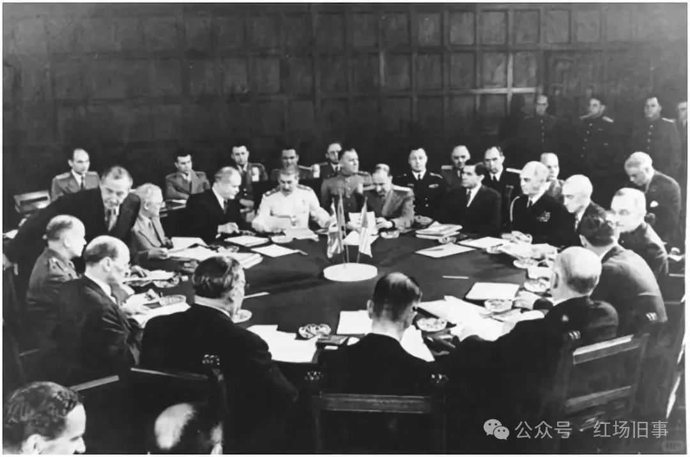
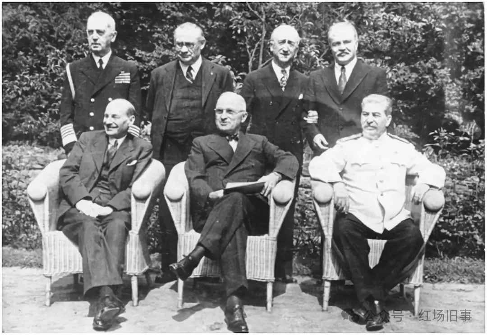
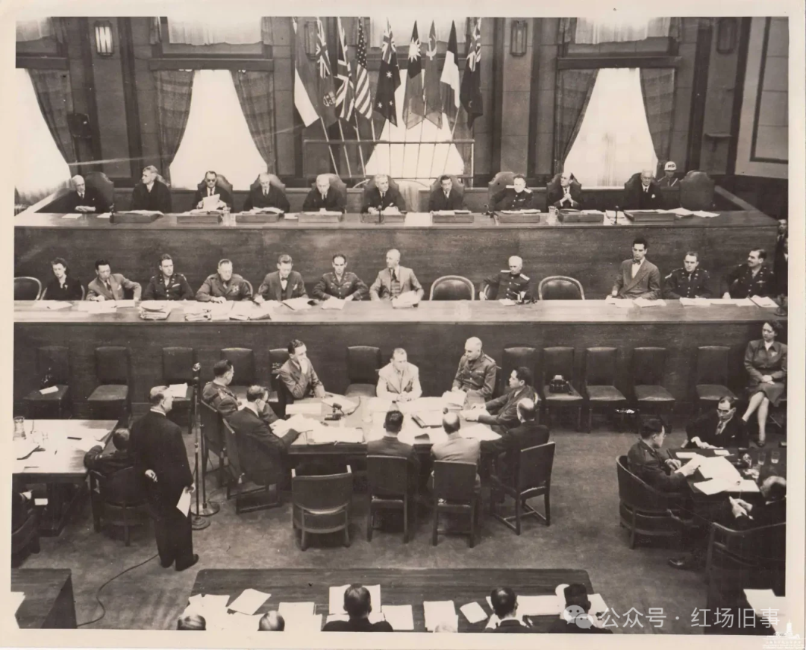
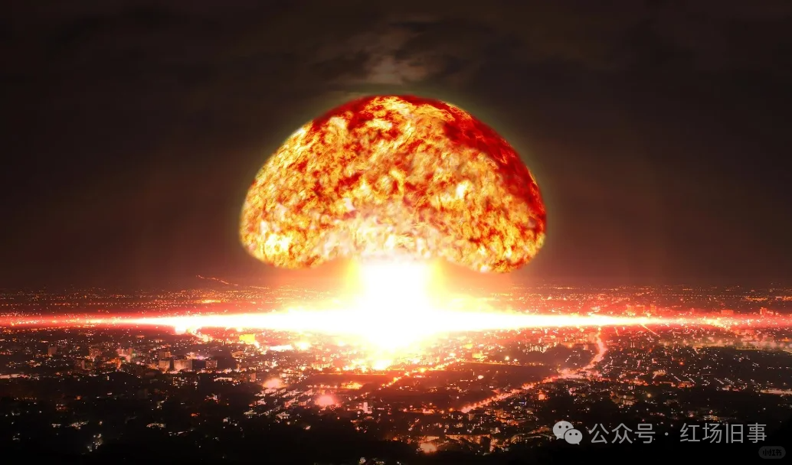
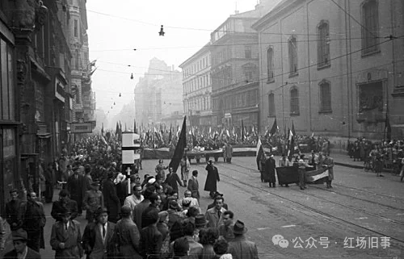

柯尼斯堡改名加里宁格勒，东普鲁士从地图上消失——苏联拿走的不仅是土地
文字与图片版权归各自权利人所有。 查看公众号原文 ↗
1945年7月，波茨坦的烟囱还在冒烟柏林郊外，采琪莲霍夫宫。

1945年7月，德国波茨坦会议现场与两年前的德黑兰相比，谈判桌旁的人换了一位。罗斯福已去世，杜鲁门第一次参会；丘吉尔中途回国，回来的不再是首相，而是新首相艾德礼。只有斯大林是“老面孔”。

左：英国首相艾德礼、中：美国总统杜鲁门、右：苏联人民委员会主席斯大林会议开场气氛微妙。杜鲁门故意晚到，会谈开始后，“不经意”地告诉斯大林：美国拥有了一种“具有非凡破坏力的新武器”。斯大林淡淡一笑：“希望你们用它对付日本。”回到住处，斯大林立即拨通莫斯科：“告诉库尔恰托夫，加快进度。”原子弹没有让斯大林惊慌，只是让他确认：战争结束了，但另一种较量刚刚开始。
一、领土扩张：边界向西推进300公里1945年，苏联国土面积增加约60万平方公里——用2700万条人命换来的领土重组。东普鲁士北部：约1.5万平方公里划归苏联，更名为加里宁格勒州。柯尼斯堡改名加里宁格勒，德意志居民被驱逐，俄罗斯人迁入。一座七百年历史的德国城市，变成纯粹的苏联城市。波兰东部“寇松线以东”：1939年苏德条约划分的土地，战后苏联正式吞并——西乌克兰和西白俄罗斯。作为“补偿”，波兰从德国获得西里西亚和波美拉尼亚，版图整体西移200公里。外喀尔巴阡乌克兰：约1.3万平方公里并入乌克兰苏维埃社会主义共和国。南萨哈林岛和千岛群岛：作为对日作战的“报酬”，苏联收回1905年失去的南萨哈林，获得整个千岛群岛——至今仍是日俄关系的死结。此外，比萨拉比亚并入，图瓦正式加入，波罗的海三国以“加盟共和国”身份被国际社会默认留在苏联版图内。苏联西部边界比战前向西推进300至400公里，东部推进到与日本隔海相望的岛链。这是沙俄帝国鼎盛时期都未曾达到的扩张规模。
二、势力范围：从“解放”到“控制”1945年2月，雅尔塔。三巨头用铅笔划出战后欧洲轮廓。

斯大林指着地图：“历史上，波兰一直是进攻俄国的走廊。这条走廊必须掌握在友好政府手中。”关于德国：巨额赔偿，彻底削弱。苏联从占领区获得赔偿，并从西方占领区获得10%的工业设备。关于远东：斯大林开价——千岛群岛、南萨哈林、中东铁路和南满铁路共管、大连“优先权益”、旅顺租借。罗斯福急需苏联出兵以减少美军伤亡，全盘接受。雅尔塔的实质是势力范围划分。斯大林得到东欧，罗斯福得到联合国框架和苏联对日承诺，丘吉尔保住了大英帝国的面子。但势力范围不是靠签字巩固的。红军所到之处，政府很快换上“对苏友好”人选。波兰的米科瓦伊奇克流亡，罗马尼亚国王退位，保加利亚农民党领袖被杀，匈牙利非共产党人被恐吓退出政坛，捷克斯洛伐克1948年通过政变完成“布拉格二月”。这个过程叫“卫星国化”。到1948年，从波罗的海到黑海，一条亲苏政权构成的“安全带”牢牢系在苏联西侧。
三、核武器起步：从“没有秘密”到“打破垄断”1945年8月，广岛消息传到莫斯科。斯大林表面冷静，内心警觉：雅尔塔和波茨坦的所有红利，都可能因美国核垄断而脆弱。苏联核计划其实早于广岛。1942年情报系统已获知英美核进展；1943年斯大林下令启动，但战争期间资源有限。广岛改变一切。1945年8月20日，斯大林签署决议，成立核问题特别委员会，贝利亚全权负责。措辞极严厉：“任何拖延将被视为危害国家罪。”贝利亚手段直接：情报、资源、人力、恐怖。调集最优秀物理学家，也调集数十万劳改营囚犯——挖矿、修路、建城。从德国运回部分设备和专家。情报系统从美国获取机密。克劳斯·福克斯——参与曼哈顿计划的英籍物理学家——向苏联提供了原子弹设计的核心数据。1946年底，苏联已掌握钚弹完整设计图。1949年8月29日，塞米巴拉金斯克试验场。第一颗原子弹“第一道闪电”成功试爆，当量约2.2万吨。美国的核垄断维持了不到四年。

1919年，凡尔赛。苏俄未被邀请参加和会，因为“不属于文明国家”。1945年，旧金山。苏联是联合国安理会常任理事国，拥有一票否决权。乌克兰和白俄罗斯作为“创始会员国”单独加入——这是雅尔塔会议上斯大林用波兰问题做交易换来的。1945年前，苏联是“孤岛”；1945年后，苏联是“阵营之首”。这个阵营包括：波兰、捷克斯洛伐克、匈牙利、罗马尼亚、保加利亚、东德、阿尔巴尼亚（1948年前）、蒙古、朝鲜北部、越南民主共和国。1947年，共产党和工人党情报局成立，协调各国共产党行动。1949年，经济互助委员会成立，苏联与东欧建立贸易和分工体系。“老大哥”是尊敬，也是枷锁。东欧国家必须按苏联模式进行政治改造、工业国有化、农业集体化。外交政策必须与莫斯科保持一致。斯大林去世后，赫鲁晓夫批判个人崇拜，东欧出现动荡——波兹南事件、匈牙利事件——最后仍需苏联坦克“维持秩序”。

1956年匈牙利事件这就是阵营逻辑：老大哥决定方向，其他人跟上，否则被纠正。
五、红利也有账单1945年，苏联获得沙皇时代梦寐以求的一切：西部安全边界、东部不冻港保障、全球第二大军事力量、安理会否决权、核俱乐部资格。但这不是免费的。2700万人死亡，1710座城镇被毁，3.2万家企业化为废墟，6.5万公里铁路瘫痪。战后苏联，农村只剩女人、老人和孩子，城市到处断壁残垣。1946年乌克兰大饥荒，数十万人饿死——粮食被征收出口换外汇，用于重建和驻军。超级大国的地位，是用一代人的脊梁撑起来的。1949年，北约成立。同年，苏联原子弹试爆。1955年，华约成立。冷战格局固化。斯大林在1945年拿到的那张牌，叫“雅尔塔体系”。这个体系持续44年，直到1991年苏联解体。
结语：赢家通吃，输家消失1945年7月，波茨坦。斯大林散步时对翻译说：“沙皇们打了上百年想要的，我们四年就拿到了。”领土、出海口、势力范围、国际地位。但他没说：沙皇们输得起，苏联输不起。2700万条命换来的红利，每一寸都需要更多军费、更严控制、更长对峙去守住。当1989年东欧剧变、1991年苏联解体，那些雅尔塔划定的势力范围，那些用鲜血换来的“卫星国”，像沙子一样从指缝流走。1945年的苏联以为自己是赢家，赢得了世界两极之一的地位。1991年的历史告诉他们：赢家通吃的规则，输家消失的规则，在同一个游戏里同时生效。但那是另一个故事了。